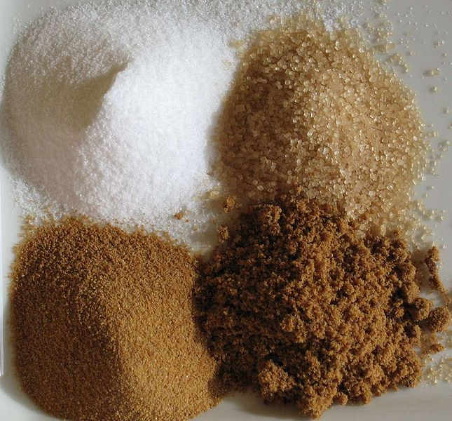

|  |
Mi is az a cukor?A köznyelvben cukor alatt többnyire a kémiában mono- és diszacharidnak nevezett szénhidrátok kristályait értjük. Étkezési cukorként (szacharóz) a cukorrépából előállított répacukrot vagy a cukornádból előállított nádcukrot ismerhetjük. Ezekből több termék készül, például a kristálycukor, porcukor, kockacukor, illetve különböző édességek tartalmazhatják. Európában a répacukor előállítása a legolcsóbb, ezért ez a legelterjedtebb. Melegebb éghajlatú területeken a nádcukor az elterjedt, amit cukornádból állítanak elő, illetve ismert még a juharcukor, amit északi országokban a juharfa nedvéből nyernek. Kémiailag mindhárom cukorfajta teljesen egyforma, csupán a kiindulási növényekből a gyártás során megmaradó szennyezőanyagok okozzák a különbségeket. Ezenkívül megemlítendőek még a különböző gyümölcscukrok (fruktóz), amelyeket a gyümölcsökből vonnak ki, valamint a tejcukor (laktóz), amelyet gyermektápszerek készítésére használnak és tejből állítanak elő. A finomított cukrot, amelyet ma minden háztartásban megtalálunk, száz-százötven évvel ezelőtt még csak a gazdagabb családok használták, még régebben csak a királyok asztalán volt található. Korábban csak a mézet használták az ételek édesítésére. |